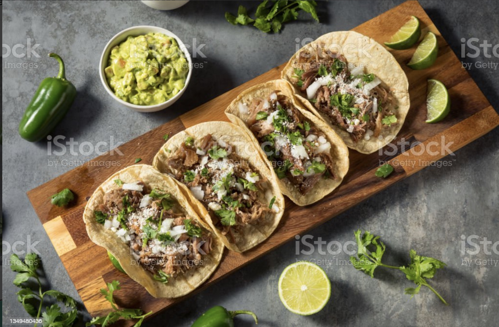

Carnitas Street Tacos

Description
This is a recipe for Carnitas Street Tacos
Ingredients
Carnitas Ingredients
- 4lbs Pork Shoulder (boneless or bone-in)
- 1 teaspoons coarse sea salt
- 1 teaspoon fresh-cracked black pepper
- 1 cup yellow onion, cut into large slices or chunks
- 4 cloves garlic, minced or crushed
- 1 cup orange juice
- 2 Tablespoons dried oregano
- 1 Tablespoon ground cumin
- 1 1/2 Tablespoons avocado or canola oil
Taco Ingredients
- 18 small tortillas (corn or flour)
- Diced white onion
- Chopped cilantro
- 4 limes, quartered
Steps
Prepare pork
- Rinse the pork shoulder and pat dry with paper towels. Cut off any excess fat, but keep fat cap intact!
- Season the pork generously with salt and pepper.
- Combine cumin and oregano, add oil and combine well. Brush the rub onto the pork, and then massage it into the meat with your hands
- Transfer the pork into the slow cooker, with the fat cap up. Add garlic, onion, and orange juice
- Cover and cook on high for 6 hours or on low for 10 hours.
- Transfer pork to a cutting board. Pull the bones out. Use tongs to pull off the fat cap and any excess fat chunks.
- Take 2 forks and shred the meat. Don’t completely shred into fine pieces, as you still want some small chunks
Char the pork
- Heat oil over medium-high heat in a large cast-iron skillet
- Add pork to the skillet in one layer and leave it alone for 3 minutes so the meat will char properly
- Flip meat with a spatula and char for another 2 minutes
Assemble tacos
- Add carnitas to tortillas
- Top with diced white onion and chopped cilantro
- Pour over a little of the reserved liquid
- Finish with a squeeze of fresh lime juice